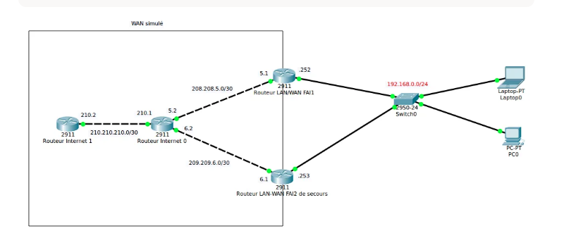

🌐 TP NAT – Configuration du NAT sortant (PAT) et du NAT entrant (redirection de ports)
1. Introduction et objectifs
Le NAT (Network Address Translation) est un mécanisme fondamental des réseaux IP. Il permet de traduire des adresses IP privées (non routables sur Internet) en adresses publiques (routables), et vice-versa. Sans NAT, chaque machine d'un réseau local aurait besoin d'une adresse IPv4 publique unique, ce qui est impossible compte tenu de l'épuisement des adresses IPv4.
Objectifs du TP :
- Comprendre la différence entre NAT sortant et NAT entrant.
- Configurer le NAT overload (PAT) pour permettre à tout le réseau privé d'accéder à Internet via une seule adresse publique.
- Configurer une redirection de ports (NAT statique) pour exposer un serveur web interne sur l'adresse publique du routeur.
- Maîtriser les commandes Cisco IOS relatives au NAT.
- Valider le bon fonctionnement via les commandes
show ip nat translationset des tests de connectivité.
2. Présentation de la topologie réseau

Éléments clés pour notre configuration :
| Élément | Rôle | Adresse IP |
|---|---|---|
| Routeur LAN-WAN FAI1 | Routeur frontière, configuré en NAT | Voie : voir ci-dessous |
| Interface GigabitEthernet0/1 | Côté LAN (interne) | 192.168.0.1/24 |
| Interface GigabitEthernet0/0 | Côté WAN (externe, vers Internet) | 208.208.208.5/30 |
| Réseau LAN | Réseau privé des utilisateurs | 192.168.0.0/24 |
| Serveur web interne | Hébergé dans le LAN, à exposer | 192.168.1.200:8080 |
192.168.0.0/24 et l'adresse publique 208.208.208.5.
3. Rappel théorique : qu'est-ce que le NAT ?
3.1. NAT sortant (PAT / overload)
Le NAT sortant permet aux machines d'un réseau privé d'accéder à Internet. Lorsqu'un hôte interne envoie un paquet vers l'extérieur, le routeur :
- Remplace l'adresse IP privée source par son adresse publique.
- Change également le port source (PAT) pour distinguer les différentes connexions.
- Garde une table de correspondance pour pouvoir router les réponses.
| Hôte interne | Adresse source originale | Après NAT |
|---|---|---|
| PC0 (192.168.0.10) | 192.168.0.10:54321 | 208.208.208.5:54321 |
| Laptop0 (192.168.0.11) | 192.168.0.11:54322 | 208.208.208.5:54322 |
208.208.208.5. Il ne connaît pas les adresses privées internes.3.2. NAT entrant (redirection de ports / static NAT)
Le NAT entrant (ou redirection de ports) permet d'exposer un service hébergé sur une machine du réseau privé vers l'extérieur.
Lorsqu'un utilisateur externe envoie une requête à l'adresse publique du routeur sur un port spécifique, le routeur redirige cette requête vers une machine interne et éventuellement un port différent.
| Requête externe | Destination | Après NAT | Destination réelle |
|---|---|---|---|
| HTTP vers 208.208.208.5:80 | 208.208.208.5:80 | → | 192.168.1.200:8080 |
4. Configuration du NAT sortant (PAT)
4.1. Adressage des interfaces
Avant toute configuration NAT, nous avons configuré les adresses IP des interfaces du routeur.
Connexion au routeur :
Configuration de l'interface interne (côté LAN) :
Configuration de l'interface externe (côté WAN/Internet) :
4.2. Définition des interfaces inside et outside
Le routeur doit savoir quelle interface est du côté "interne" (réseau privé) et quelle interface est du côté "externe" (Internet).
ip nat inside: les paquets provenant de cette interface sont candidats à la traduction NAT (source).ip nat outside: les paquets arrivant sur cette interface sont candidats à la traduction inverse (destination).
4.3. Création de l'ACL pour identifier les hôtes à traduire
Une ACL (Access Control List) standard détermine quelles adresses IP internes doivent être traduites.
| Élément | Signification |
|---|---|
access-list 1 | Numéro de l'ACL (standard, de 1 à 99) |
permit | Autorise le trafic correspondant à être traduit |
192.168.0.0 0.0.0.255 | Réseau 192.168.0.0/24 (le wildcard 0.0.0.255 correspond à un masque de 24 bits) |
4.4. Application du NAT Overload (PAT)
La commande suivante lie l'ACL à l'interface externe et active le PAT (overload) :
| Élément | Signification |
|---|---|
ip nat inside source | Configure la traduction NAT pour les paquets provenant de l'intérieur |
list 1 | Utilise l'ACL numéro 1 pour identifier les hôtes à traduire |
interface GigabitEthernet0/0 | Utilise l'adresse IP de cette interface comme adresse publique de sortie |
overload | Active le PAT (plusieurs hôtes partagent la même adresse publique) |
4.5. Configuration complète du routeur
5. Configuration du NAT entrant (redirection de ports)
5.1. Principe de la redirection
Le NAT entrant permet d'exposer un service interne sur l'adresse publique du routeur. Dans notre exemple, nous souhaitons qu'une requête HTTP envoyée à l'adresse publique 8.8.8.1 sur le port 80 soit redirigée vers un serveur interne à l'adresse 192.168.1.200 sur le port 8080.
│
▼
Routeur (NAT)
│
▼
Redirection vers 192.168.1.200:8080
5.2. Commande de NAT statique
La commande Cisco pour configurer cette redirection est :
| Élément | Signification |
|---|---|
ip nat inside source static | Configure une traduction statique (fixe) pour les paquets provenant de l'intérieur |
tcp | Protocole concerné (TCP pour HTTP) |
192.168.1.200 | Adresse IP privée du serveur interne |
8080 | Port sur lequel le serveur interne écoute |
8.8.8.1 | Adresse IP publique exposée (celle du routeur ou d'une adresse publique dédiée) |
80 | Port public exposé (port standard HTTP) |
8.8.8.1 n'est qu'un exemple. Dans notre topologie, l'adresse publique du routeur est 208.208.208.5. La commande réelle serait :
5.3. Exemple complet avec vérification
Configuration :
Résultat dans la table NAT :
http://208.208.208.5.6. Validation et tests
6.1. Vérification des traductions NAT
Afficher la table NAT :
Effacer les traductions dynamiques (utile pour les tests) :
Afficher les statistiques NAT :
6.2. Test de connectivité depuis le LAN
Depuis un poste interne (ex : PC0 en 192.168.0.10), tester l'accès à Internet :
Sur le routeur, observer la création d'une entrée NAT :
6.3. Test d'accès externe au serveur
Depuis un poste externe (simulation), accéder au serveur web exposé :
192.168.1.200:8080 s'affiche.7. Problèmes rencontrés et solutions
| Problème | Cause | Solution |
|---|---|---|
| Les hôtes du LAN n'ont pas accès à Internet | L'ACL ne correspond pas au réseau (mauvais wildcard) | Vérifier access-list 1 permit 192.168.0.0 0.0.0.255 |
| Le NAT ne fonctionne pas | Les interfaces n'ont pas été marquées ip nat inside/outside |
Appliquer ip nat inside sur Gi0/1 et ip nat outside sur Gi0/0 |
| La redirection de ports ne fonctionne pas | Le serveur interne n'écoute pas sur le bon port (8080) |
Vérifier la configuration du serveur avec netstat -tuln |
| Le routeur n'a pas de route par défaut | Les paquets sortants n'ont pas de chemin vers Internet | Ajouter ip route 0.0.0.0 0.0.0.0 <IP_passerele_FAI> |
| Conflit avec l'ACL existante | Une autre ACL bloque le trafic avant NAT | Placer l'ACL de NAT avant les ACL de filtrage |
La commande ip nat inside source static échoue |
L'adresse publique est déjà utilisée dans une autre traduction | Utiliser clear ip nat translations * ou une autre adresse publique |
8. Conclusion
Ce TP nous a permis de maîtriser les deux principaux cas d'usage du NAT sur un routeur Cisco.
Ce que nous avons appris :
- NAT sortant (PAT) : permet à tout un réseau privé d'accéder à Internet avec une seule adresse publique.
- NAT entrant (redirection de ports) : permet d'exposer un service interne sur l'adresse publique du routeur.
- Commandes de vérification essentielles :
show ip nat translations,show ip nat statistics,clear ip nat translations *.
Récapitulatif des commandes clés :
| Commande | Rôle |
|---|---|
ip nat inside | Marque une interface comme interne (LAN) |
ip nat outside | Marque une interface comme externe (WAN) |
access-list X permit Y | Définit quelles adresses doivent être traduites |
ip nat inside source list X interface Y overload | Active le PAT (NAT dynamique avec overload) |
ip nat inside source static tcp IP_int port_int IP_ext port_ext | Redirection de ports statique (NAT entrant) |
show ip nat translations | Affiche la table de traduction active |
clear ip nat translations * | Vide la table NAT (utile pour les tests) |
Application dans un contexte professionnel :
| Besoin | Solution NAT |
|---|---|
| Donner accès Internet à 200 employés | NAT overload (PAT) avec une seule IP publique |
| Exposer un serveur web interne sur Internet | NAT statique avec redirection de ports (80 → 80 ou 80 → 8080) |
| Exposer un serveur SSH (accès à distance) | |
| Faire cohabiter plusieurs serveurs web sur la même IP publique |
Limites à connaître :
- Le NAT casse le modèle de bout-en-bout d'Internet (certains protocoles comme FTP ou SIP ont du mal à traverser le NAT).
- IPv6 rend le NAT moins nécessaire, mais il reste massivement utilisé en IPv4.
- Le NAT masque les adresses internes, mais ce n'est pas une solution de sécurité à proprement parler (un pare-feu reste indispensable).